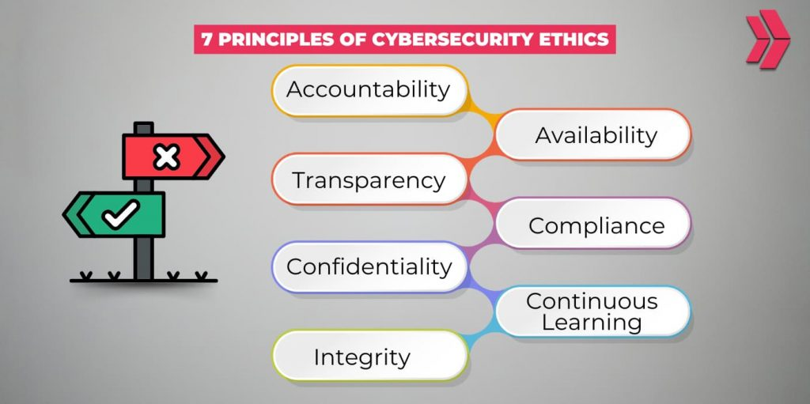

Security and Ethics
Advocate for robust security protocols, ethical data use, and compliance with privacy standards.
Priority:
Embed security and ethical considerations into every stage of development.
Why Advocate for This:
With growing concerns of data privacy and security, incorporating robust security and ethical data collection practices in IT is crucial. This includes protecting user data, having a transparent privacy policy, and investment in security. Proactive security measures and ethical IT practices can not only build consumer trust, but also often leads to cost saving in the long run.
Key initiatives include:
- Data Privacy: Ensure compliance with regulations like GDPR and CCPA.
- Proactive Security: Implement DevSecOps practices to identify and address vulnerabilities early.
- Ethical AI: Avoid algorithmic biases by testing models against diverse datasets.
- Transparency: Communicate clearly about data usage policies to users./li>